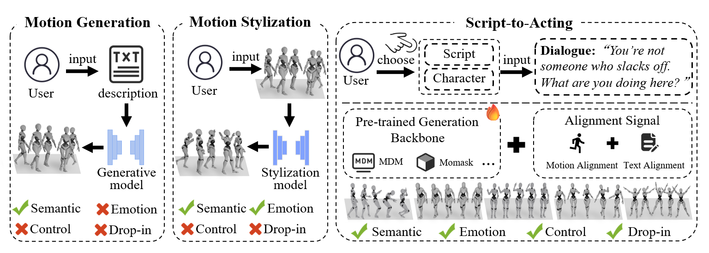

Video Presentation
Same line. Different emotion. Different acting.
What we did. We turn a raw theatre script into acting, and let emotion intensity change what the performer does, not just how big the motion is.
Why. Text-to-motion and motion-stylization methods keep the motion content fixed and only rescale style or intensity. Real acting does not work that way: as anger grows, a submissive plea can become a waving reprimand, then a shove-away.
Generalization. We validate the method on both diffusion (MDM, MLD) and masked-token (MoMask, MMM) motion generators, and it improves all four without changing their architectures. With new datasets, the same recipe can extend to more plays and emotion axes, so we expect it to generalize well beyond TheaterAct.
Contributions
- We formulate Script-to-Acting, a framework that turns scripts directly into expressive, physically plausible, contextually aligned acting, with continuous control over dramatic intensity instead of discrete emotion labels. The modules can be integrated into existing motion-generation models to enhance emotion-aligned generation and fine-grained control.
- We identify content-variant control as the key capability that distinguishes acting from styled motion: as emotional intensity increases, the acting mode can change rather than remaining fixed. We realize this through Acting Morph, which replaces a global style code with a token-wise acting-mode matrix that binds motif coordinates to script tokens, so intensity traverses distinct acting motifs rather than rescaling a fixed action.
- We release TheaterAct, the first multimodal dataset centered on script–dialogue–acting alignment and fine-grained dramatic emotions, with script-level context and rich annotations. It enables supervised training and evaluation of script-conditioned, emotion-aligned acting, and supports continuous intensity control along multiple emotion axes, providing a benchmark substrate for future work on expressive acting generation.
Teaser

Acting across Emotion Axes
On the same character (Hamlet), each line is played along one of the six emotion axes. As the intensity is swept, the performance traverses distinct acting motifs rather than rescaling a single gesture.
“Frailty, thy name is woman!”
Hamlet speaks with broad overlapped hands, waves, points forward, slashes and waves frantically in anger.
“The undiscovered country from whose bourn no traveller returns, puzzles the will.”
Hamlet steps and probes, crouches guarded, retreats head-hugging, and squats clutching his head in fear.
“Heaven make thee free of it! I do beseech you.”
Hamlet kneels in prayer, rebukes, shoves and turns, charges and shakes shoulders in disgust.
“How weary, stale, flat, and unprofitable seem to me all the uses of this world!”
Hamlet walks upright, trudges hunched, clasps and bows, then sits hiding his face on knees in sadness.
“Horatio, a fellow of infinite jest, of most excellent fancy.”
Hamlet raises an arm, poses to orate, cheers aloud, and runs in circles across the stage in joy.
“To be, or not to be: that is the question.”
Hamlet kneels open-armed, scans viewers, speaks boldly, and runs stretched with tilted head in neutrality.
BibTeX
@inproceedings{scripttoacting2027,
title = {Bring Scripts to Acting! Content-Variant Control for Emotion-Aligned Acting Generation},
author = {Li, Mengtian and Xiong, Sifan and Qin, Botao and Pan, Yichen and Jin, Li and Li, Yanran},
booktitle = {International Conference on Learning Representations},
year = {2027}
}